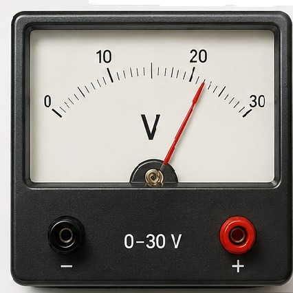

Електрично напрежение
Тест №8
.
Зад.1.Kоя е причината за протичане на ток през един консуматор?а) наличие на проводник;
б) наличие на свободни електрични заряди;
в) наличие на проводник и създадено между краищата му напрежение;
.
г) гравитационно привличане.Зад.2.Коя е мерната единица за напрежение?
а) ампер;
б) ват ;
в) кулон;
г) волт.
.
Зад.3. 0,08 V са равни на:а) 800 mV;
б) 8kV ;
в) 80mV;
г) 8mV .
.
|  |
Зад.4.Какъв е обхватът на волтметъра ? а) 5 V; б) 30 V; в) 10 V ; г)10 mV. |
.
Зад.5.В каква енергия консуматор не може да превърне електрическата енергия?
а) светлинна;
б) слънчева;
в) механична;
г) топлинна.
.
Зад.6.Електричното напрежение върху един консуматор е мярка за:
а) броят на електроните, преминали за 1 секунда през консуматора;
б) енергията, която всеки електрон отдава на консуматора.
.
Зад.7.Превърнете:
а) 720 kV =.....V
б) 720mV =......V
B) 4kV =.....mV
.
Справочник.
Начална страница| Предишен| Следващ.
Упътване | Ключ